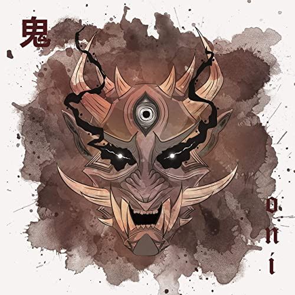
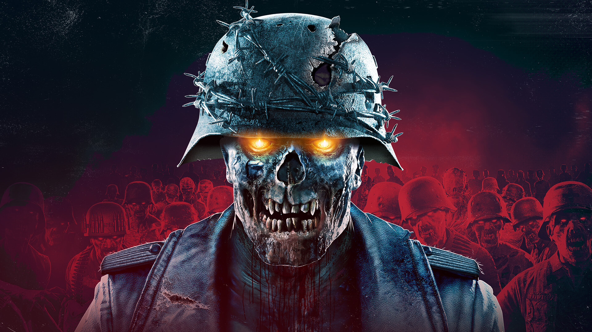
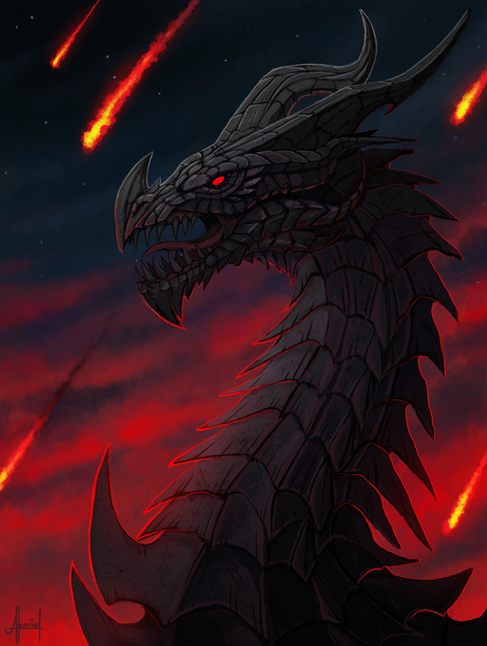
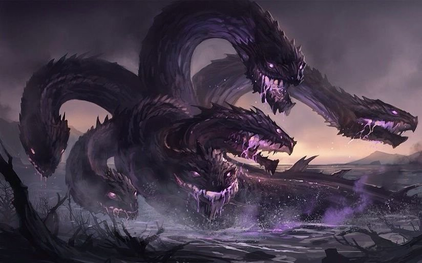
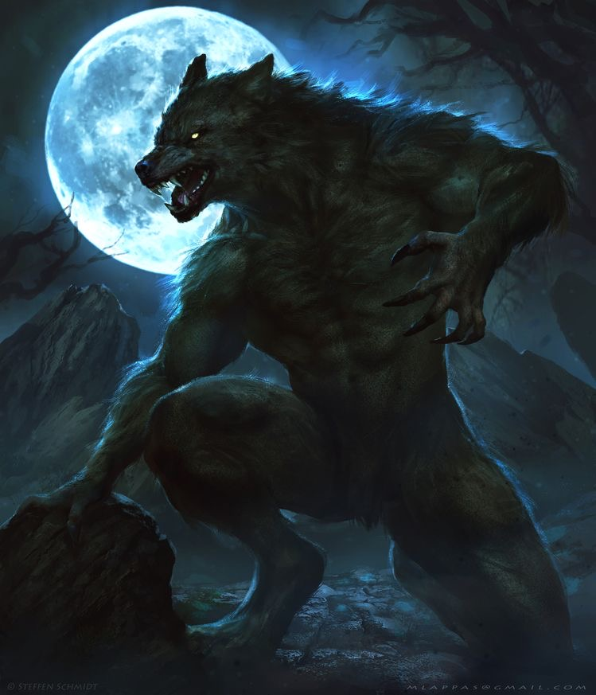
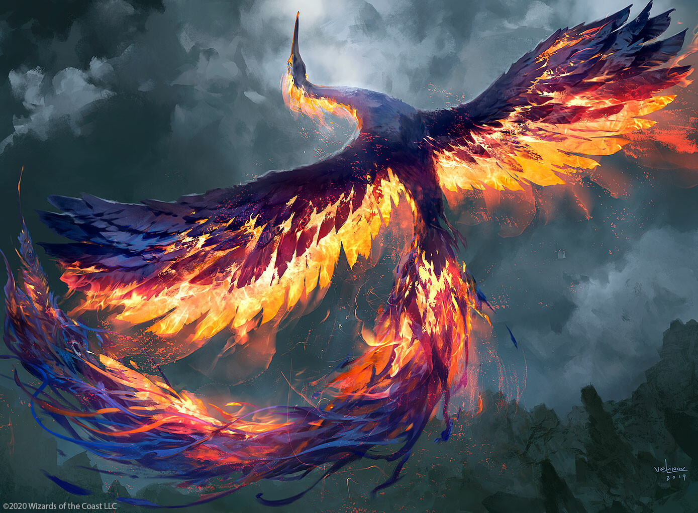
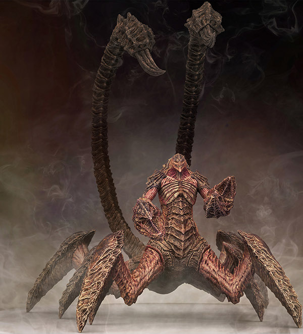
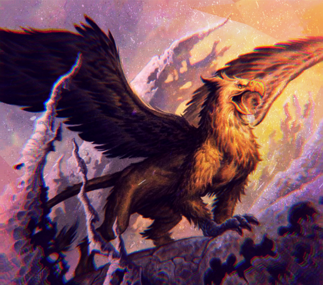
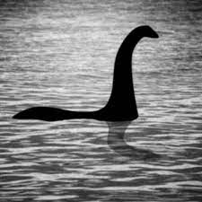
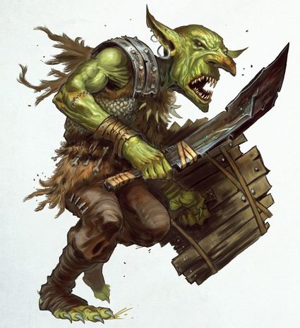

| Number | Name | Description | |
|---|---|---|---|
| 1 | Oni | Oni are people who were so truly wicked in their lives that they transformed into demons in hell. Some were even bad enough to be transformed while still alive. They enact violent punishment on evil-doers and will eat just about anything, including humans. While stories or depictions of oni may vary, they are always seen as dangerous and powerful villains. |  |
| 2 | Zombie | Zombies originated in Haitian folklore, with the Haitian French term “zombi” or Haitian Creole “zonbi” used to describe a corpse reanimated through magic or other means. Across the years, zombie stories have shifted to meet current cultural fears and contexts, and bodies are often reanimated through viruses or other scientific processes. |  |
| 3 | Dragon | Dragons are giant serpent-like, winged monsters that have been featured in myths from all around the world. There are some cultures that believe that the creatures are not in fact mythical, but rather giant creatures who had previously died out, like dinosaurs. |  |
| 4 | Hydra | The Hydra was depicted as a gigantic, snake-like monster with many heads, each of which could dispel acid. In mythological accounts, cutting off one of the Hydra’s heads would result in two more growing into its place. |  |
| 5 | Werewolf | The history of the werewolf or lycanthrope is incredibly diverse, with stories from Germanic pagan cultures, Slavic Europe, and classic Greek mythology. A werewolf is a human who can transform or shapeshift into a wolf, though stories may differ. |  |
| 6 | Phoenix | The phoenix is a mythical eagle-like creature, generally known for bursting into flame at the end of their life, only to emerge from the ashes as a young phoenix. In both ancient Egyptian and Classical myth, the phoenix was associated with sun worship and was depicted as a large bird, with gold and red feathers that could live for hundreds of years. |  |
| 7 | Aqrabuamelu or scorpion man | The aqrabuamelu, or scorpion man, is a monstrous creature that originated in ancient Mesopotamia, specifically in Babylonian creation myths. They are a hybrid of a scorpion and a man. While they are terrifying in appearance and were created to wage war against gods, they also stand as guardians and often warn travelers who might be in danger. |  |
| 8 | Griffin | A hybrid of a lion and an eagle. Traditionally, griffins were depicted with the body, tail, and hind legs of a lion in addition to the head, wings, and talons of an eagle. However, sometimes, the art of griffins featured the creatures with lions front paws as well. |  |
| 9 | Loch Ness | The myth of the Loch Ness Monster dates back all the way to the Picts, a people group in ancient Scotland. Scottish folklore is full of mythical water creatures, but Nessie is definitely the most famous. In appearance, the Loch Ness Monster resembles a water-based dinosaur. |  |
| 10 | Goblin | First appearing in Germanic and British folk tales, goblins vary in abilities, physical appearances, and purposes depending on the story and purpose. Like many other European legends, the origin of goblin mythology is not exactly clear. However, whether with devious tricks or real harm, they are universally known to be troublemakers and possess qualities of malice and greed. |  |